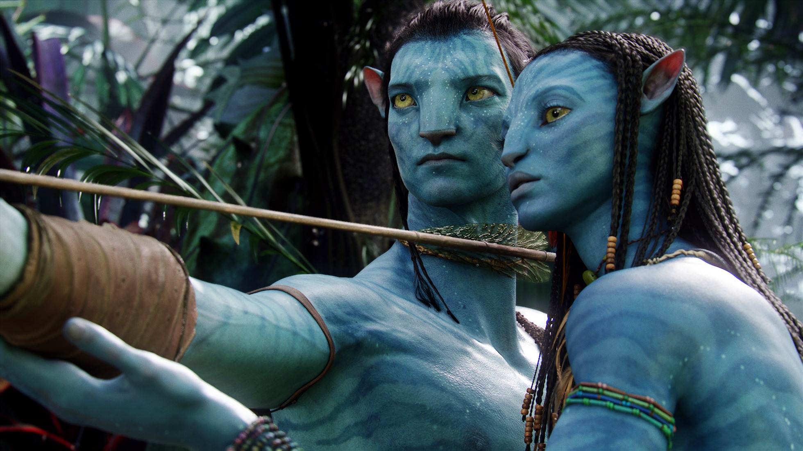
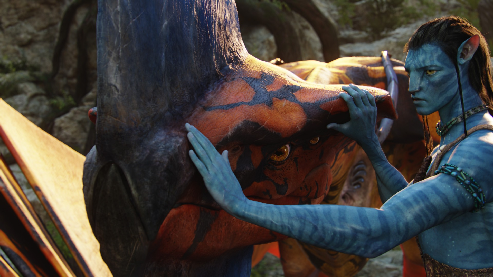
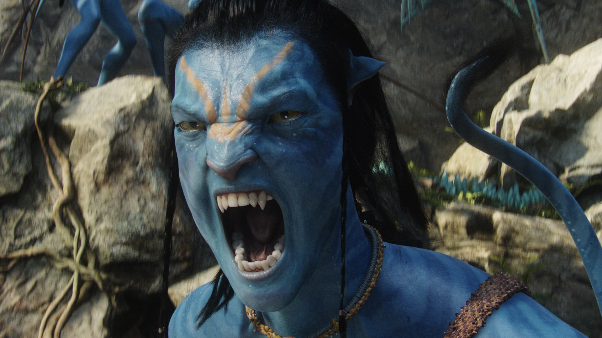

Trở lại rạp chiếu phim sau 13 năm nắm giữ kỷ lục “phim điện ảnh ăn khách nhất mọi thời đại”, “Avatar” vẫn đủ sức tạo sức hút với khán giả.
Theo Variety, tác phẩm của đạo diễn James Cameron vẫn hấp dẫn khán giả sau 13 năm phát hành. Tác phẩm thu 10 triệu USD tại thị trường Bắc Mỹ và 20,5 triệu USD tại các quốc gia và vùng lãnh thổ khác. Nhiều chuyên gia phòng vé kỳ vọng Avatar sớm trở thành dự án điện ảnh đầu tiên chạm mốc 3 tỉ USD. Trước đợt chiếu lại, phim hiện giữ kỷ lục ăn khách nhất mọi thời với doanh thu hơn 2,85 tỉ USD.
Phiên bản mới của Avatar phần 1 có gì khác biệt?
13 năm là khoảng thời gian không ngắn, nhưng cũng không quá dài, đủ để khiến những ai từng trải nghiệm “Avatar” ở màn bạc 2009 thấy như gặp lại một người bạn cũ, khi hình ảnh hành tinh Pandora xuất hiện, cùng tộc người Navi.
Sau hơn một thập kỷ, “Avatar” vẫn đủ sức khiến khán giả ở mọi thế hệ bất ngờ vì hiệu ứng hình ảnh và âm thanh mà nó đem lại. Hình ảnh sắc nét với chiều sâu của kỹ thuật quay 3D, hệ sinh thái kỳ thú của Pandora hiện lên lung linh, huyền ảo và chân thực tới mỗi người xem.
Đặc biệt khi thưởng thức phiên bản này ở màn chiếu IMAX cùng kính 3D, mọi thứ hiện lên thân thực. Chính vì lẽ đó, với cả những người đã có cơ hội xem “Avatar” ở rạp chiếu 2009 – thời mà chưa nhiều nơi có rạp IMAX đã chia sẻ: “Phim làm 13 năm trước mà hình ảnh vẫn gây choáng ngợp thế này”.
 Những giá trị thông điệp đi trước thời đại
“Avatar” phần đầu tiên có nội dung không quá phức tạp, cùng lối kể chuyện cổ điển đặc trưng cho James Cameron nói riêng và Hollywood nói chung. Bối cảnh trong phim diễn ra tại hành tinh Pandora xinh đẹp, nơi có những khu rừng nhiệt đới kỳ ảo, những cây cổ thụ khổng lồ, những loài sinh vật mạnh mẽ, hung dữ và đặc biệt là chủng tộc người da xanh Na'vi. Ở Pandora có mỏ khoáng chất quý hiếm Unobtainium - được coi như chiếc chìa khóa cho cuộc khủng hoảng năng lượng tại Trái đất vào thế kỷ 22. Đó chính là lý do khiến con người đổ bộ xuống Pandora và bỏ ra hàng trăm tỉ USD để tìm cách xâm chiếm và khai thác nguồn khoáng chất này. Nhưng việc con người xuất hiện tại nơi đây đã phá tan sự yên bình của chủng tộc người Na'vi và có nguy cơ làm nổ ra cuộc chiến tranh tàn khốc.
Phim thể hiện sự khốc liệt của chiến tranh; thiên nhiên, môi trường đang bị hủy hoại do bàn tay của con người vẫn là những thông điệp mang giá trị thời sự cho tới tận ngày hôm nay. Thời điểm 2009 khi phim ra mắt, mạng xã hội đang trên đà phát triển nhưng chưa có sự bùng nổ như ở thập niên 2010 và đến nay, người ta đã nghĩ về một Metaverse – nơi con người có thể ngồi một chỗ và tạo ra thực tế ảo, vũ trụ ảo.
Hơn cả một trào lưu
James Cameron và “Avatar” đã tạo ra trào lưu làm phim 3D, đã thay đổi lịch sử của ngành công nghiệp điện ảnh và tạo thói quen cho khán giả ra rạp với cặp kính.
Sau đó có rất nhiều bộ phim ăn theo trào lưu này nhưng chưa tác phẩm nào vượt được “Avatar” về quy mô cũng như hiệu ứng. James Cameron cho thấy ông là người khởi tạo, tiên phong về công nghệ làm phim nhưng không phải ai cũng theo được.
Rất nhiều phim 3D sau này đã thất bại và theo thời gian, nhiều khán giả cũng không còn mặn mà với việc đeo kính trong rạp chiếu để trải nghiệm hình ảnh nổi mà quay về phim 2D truyền thống.
Chính vì thế, sự trở lại của “Avatar” trước thềm phần 2 ra mắt vào cuối năm mang ý nghĩa với các tín đồ điện ảnh trên khắp thế giới.
PHÂN HIỆU TRƯỜNG ĐH GTVT TẠI TP. HỒ CHÍ MINH
Địa chỉ: 450-451 Lê Văn Việt, Phường Tăng Nhơn Phú A, Tp. Thủ Đức (Quận 9 cũ), TP. Hồ Chí Minh
Điện thoại: (028).3896.6798 - (028).7300.1155
Email: banbientap@utc2.edu.vn
Fax: (028).3896.4736 - Website: http://utc2.edu.vn